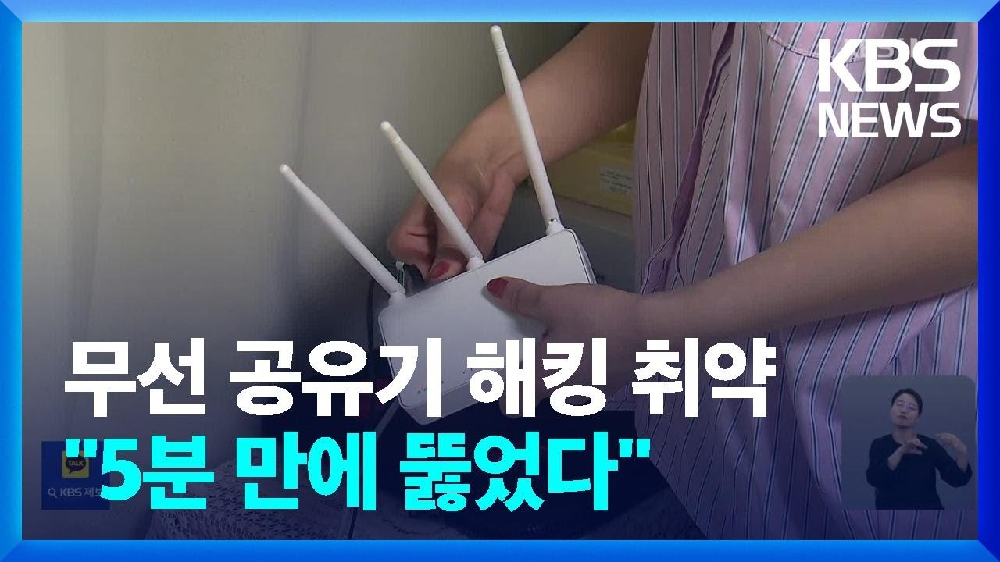
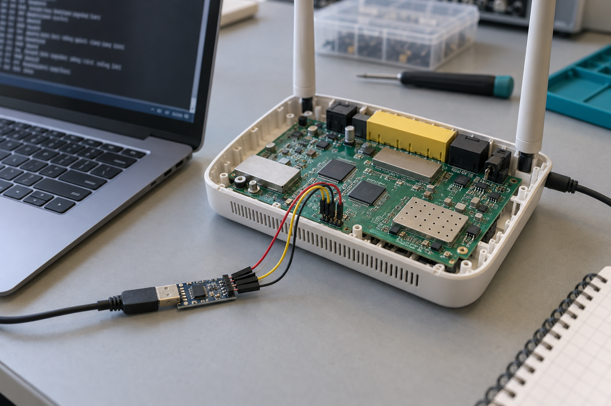
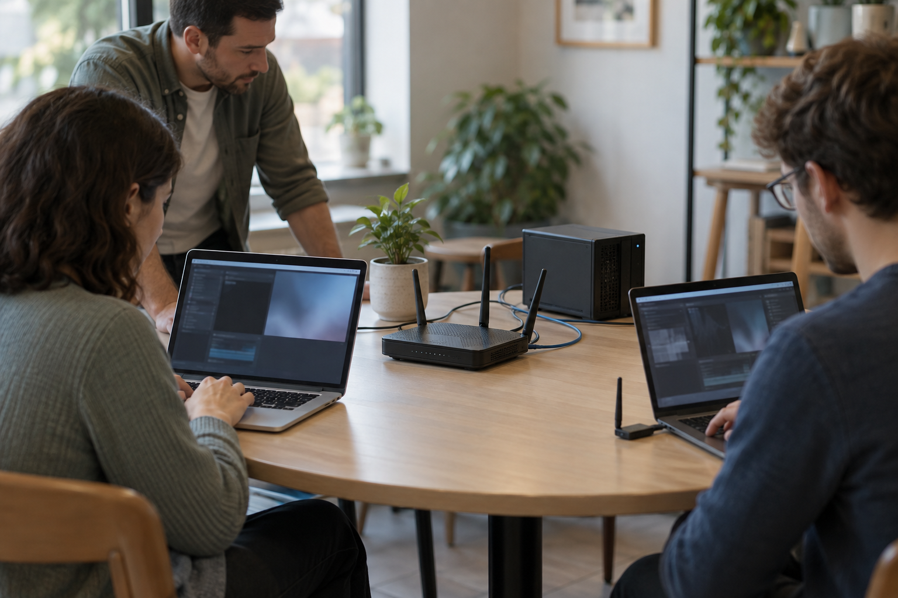
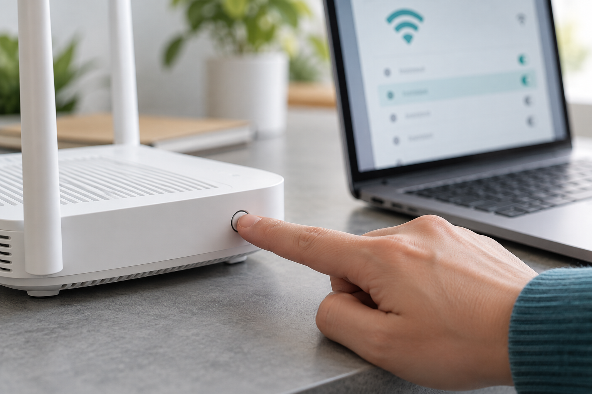

공유기의 설정·통신·가입 통제
내부 진단 접근
전송 내용 보호
WPS 가입 정책
세 가지 시나리오의 공격 조건과 예상 위험
공유기의 설정·통신·가입 통제
내부 진단 접근
전송 내용 보호
WPS 가입 정책
세 가지 시나리오의 공격 조건과 예상 위험
모의해킹 대상·환경 분석·위험 분석
Attack Tree·STRIDE
세 가지 공격 상황과 진행 과정
공격 경로·Impact·대응
카페에서 공유기를 사용하는 상황을 가정한다.
공유기는 손님과 매장 단말의 통신을 중계하고, 장비 설정과 무선망 가입을 관리한다.
운영자는 설정과 접속을 통제할 수 있어야 하고, 이용자는 전송 내용이 보호되어야 한다.
이 프로젝트는 내부 진단 기능, 무선 통신, 버튼 등록 경로에서도 이러한 보호가 유지되는지 살펴본다.
취약한 공유기의 설정이 바뀌면, 연결된 이용자도 공격자 서버로 유도될 수 있다.
FBI·Microsoft 공개 분석 · 2026.04.07
공격자가 취약한 가정·소규모 사무실용 공유기에 접근했다.
인터넷 주소를 안내하는 설정을 바꿔, 연결된 기기를 공격자 서버로 유도했다.
일부 표적에서 잘못된 인증서 경고를 무시하면, 통신에 끼어들어 계정·이메일 정보를 읽을 수 있었다.

방송사가 보안업체와 함께 재현한 시연이다.
우리 프로젝트: 공유기의 설정·통신·가입 통제가 유지되는지 확인한다.
배경 사례의 제품·공격 경로는 N704-V3 실습과 다르다. 오른쪽 영상은 별도의 모의해킹 시연이다.
ipTIME N704-V3는 취약 동작이 공개된 구버전의 공식 펌웨어를 확보할 수 있어, 재현 환경을 비교적 쉽게 구성할 수 있다.
| 사용 목적 | 사용 버전 |
|---|---|
| 시나리오 1 · UART 진단 | 9.98.6 |
| 시나리오 2 · 무선 통신 | 9.98.6 |
| 시나리오 3 · WPS 패치 비교 | 9.92.8 / 9.94.2 |
같은 모델의 공개 사례·공식 이미지·복구 자료를 연결할 수 있어 선정했다. 실물에는 호환성을 확인한 뒤 적용한다.
UART USB-UART·점퍼선·시리얼 터미널
멀티미터·로직 애널라이저로 전압·신호 확인
무선 모니터 모드 무선랜카드·Wireshark
주변 무선 프레임 수집·관찰
WPS WPS/PBC 지원 시험 단말
버튼 등록과 새 단말 가입 확인
공통 분석 PC·시험 서버·LAN 케이블
인터넷·운영망에 연결하지 않는 팀 전용 LAN(내부망) 구성안이다. 시험 단말은 공유기를 통해 시험 서버와 통신한다.
시험망 분리: 공유기 WAN 케이블을 연결하지 않고, 서버 PC의 다른 망 연결과 인터넷 연결 공유도 사용하지 않는다.
시험 대상: 팀 전용 Wi-Fi와 합성 메시지만 사용한다. 실선은 통신·입력, 점선은 수신, ①~③은 시나리오 위치다.
실제 수집 사건, 실기기 공격 실증, 제조사 수정 기록을 바탕으로 설정·통신·가입의 보호를 살펴본다.
| 공개된 사례 | 사례에서 드러난 위험 | 우리 시나리오의 목적 |
|---|---|---|
| Amazon Echo · 2017 구형 기기 보안 연구 | 물리 디버그 단자와 외부 부팅을 이용한 기기 제어·마이크 전송 위험을 보고 | 시나리오 1 기판 접근이 진단 기능의 무단 사용과 설정 변경으로 이어지는지 살펴본다. |
| Google Street View · 2010 실제 무선 데이터 수집 사건 | 암호화되지 않은 Wi-Fi에서 이메일·사용자명·비밀번호 등을 수집 | 시나리오 2 주변 수신자의 본문 열람 위험과 HTTPS의 보호 효과를 비교한다. |
| ipTIME N704V3 · 2016 제조사 펌웨어 수정 | WPS OFF일 때 물리 버튼도 동작하지 않도록 수정 | 시나리오 3 관리 화면의 차단 정책이 버튼과 새 단말 가입에도 적용되는지 비교한다. |
Echo는 다른 기기의 유사 위험 실증이다. N704-V3에서 같은 기기 제어·도청 피해를 확인했다는 뜻은 아니다.
예상 공격 경로 · AND는 하위 조건 모두 필요 · 점선은 HTTPS 보호 비교
앞에서 본 공격 경로를 권한 상승(E)·변조(T)·정보 노출(I)에 해당하는 위험으로 분류한다.
| 약자 | 전체 명칭 | 뜻 | 우리 시나리오 |
|---|---|---|---|
| S | Spoofing | 신원 위장 · 다른 사용자나 장치인 척함 | 해당 없음 |
| T | Tampering | 변조 · 허가 없이 데이터·설정을 바꿈 | 시나리오 1 진단 설정 변경 |
| R | Repudiation | 행위 부인 · 수행한 행동을 부정함 | 해당 없음 |
| I | Information Disclosure | 정보 노출 · 허가받지 않은 사람이 내용을 읽음 | 시나리오 2 전송 메시지 열람 |
| D | Denial of Service | 서비스 거부 · 정상 사용자의 이용을 방해함 | 해당 없음 |
| E | Elevation of Privilege | 권한 상승 · 허용되지 않은 기능·권한을 얻음 | 시나리오 1 · 진단 기능 접근 시나리오 3 · 새 단말 가입 |
관리 암호를 모르는 기판 접근자가 정비 기능을 통해 공유기 설정을 바꾸는 상황이다.
정비용 통신 단자에서 고정 문자열로 진단 메뉴를 열 수 있다. 웹 관리 암호와 별개로 진단 설정을 바꾸는 경로가 남아 있는지 살펴본다.
UART는 기판에서 입력과 로그를 주고받는 통신 통로다. 공격자는 PC와 USB-UART를 연결해 진단 메뉴에 들어가고, 메뉴의 설정 쓰기 기능을 이용하려 한다.

PC·USB-UART → UART 입력 → 진단 기능
xdiag는 관리자 명령어가 아니라, 분석한 9.98.6 펌웨어에서 정비용 진단 메뉴를 여는 고정 입력 문자열이다.
PC에서 부팅 로그를 보고 입력 전달
정해진 문자열을 받아 진단 메뉴 표시
메뉴에서 진단 설정 쓰기 수행
웹 관리 화면의 로그인과 다른 경로에서 정비 기능에 접근한다. 운영자가 승인하지 않은 사람이 진단 설정을 바꿀 수 있다면 장비 설정의 통제가 약해진다.
Wi-Fi 이름이나 비밀번호 대신 진단 모드의 ON·OFF 설정을 대상으로 한다. 메뉴 접근, 설정 쓰기, 재부팅 후 유지와 복원은 각각 구분해 관찰한다.
메뉴 접근·설정 변경·재부팅 후 유지·복원을 구분하고, 단계별 판정 기준과 증거를 정한다.
| 확인 단계 | 판정 기준 | 남길 증거 |
|---|---|---|
| 변경 전 | 정상 부팅·설정·서비스의 기준 상태 확보 | 기준 부팅 로그·설정 화면 |
| 진단 메뉴 접근 | 운영자 인증 없이 진단 메뉴가 표시됨 | UART 입력·메뉴 출력 기록 |
| 진단 설정 변경 | 설정 쓰기 후 설정값 또는 진단 동작의 변화 확인 | 변경 전후 출력·동작 기록 |
| 재부팅 후 유지 | 추가 입력 없이 변경된 상태가 남음 | 재부팅 로그·변경 상태 기록 |
| OFF 조작 후 복원 | 재부팅 후 기준 설정·동작으로 돌아오는지 확인 | OFF 조작·재부팅·기준 상태 대조 |
메뉴 접근·설정 변경·유지·복원을 따로 판정한다. 설정 쓰기는 원본 보존과 복구 준비 후 수행한다.
단말이 공유기를 통해 서버로 보낸 메시지를, 같은 장소의 별도 수신기가 관찰하는 상황이다.
개방형 Wi-Fi와 평문 HTTP를 함께 사용하면 무선 구간과 메시지 본문이 암호화되지 않는다. 전파를 받을 수 있는 주변 수신자가 내용을 읽는 위험을 다룬다.
별도 수신기가 정상 통신 경로 밖에서 무선 프레임을 수집한다. 같은 시험 메시지를 HTTP와 HTTPS로 보낼 때 본문을 읽을 수 있는지 관찰한다.

정상 통신 경로 밖에서 무선 프레임 수집·관찰
같은 합성 문구를 보내고, 별도 수신 자료에서 원문을 읽을 수 있는지 비교한다.
| 비교 항목 | HTTP · 평문 전송 | HTTPS · TLS로 보호 |
|---|---|---|
| 같게 유지할 조건 | 같은 단말·서버·수신 위치 같은 합성 문구 | 같은 단말·서버·수신 위치 같은 합성 문구 |
| 전송 방식 | 메시지 본문을 평문으로 전송 | TLS로 메시지 본문을 암호화 |
| 판정 기준 | 수신 자료에서 보낸 합성 문구가 그대로 읽히면 본문 노출 | 대상 통신을 수신했지만 복호화 키 없이 본문은 읽히지 않음 |
| 남길 증거 | 수신 파일·합성 문구가 보이는 화면 서버의 요청 수신 기록 | 수신 파일·TLS 통신 확인 화면 서버의 요청 수신 기록 |
TLS(Transport Layer Security)는 전송 구간을 보호한다. 대상 통신을 수신하지 못한 경우는 비교에서 제외하며, 수신기에 TLS 복호화 키를 제공하지 않는다.
관리자는 WPS를 껐지만, 버튼에 접근한 사람이 새 단말을 등록하려는 상황이다.
WPS를 꺼두면 간편 등록도 막혀야 한다. 버튼 처리 경로가 OFF 설정을 따르지 않으면, 관리자가 닫아 둔 등록 경로가 다시 열릴 수 있다.
WPS는 무선망 간편 등록 기능이고, PBC는 버튼을 이용한 등록 방식이다. 공격자는 버튼을 눌러 등록을 시작하고 접속 정보가 없는 자기 단말을 가입시키려 한다.

등록 시작 확인 → 실제 단말 가입 확인
버튼이나 LED의 반응만으로 무선망 가입이 성공했다고 할 수 없다. 등록 시작부터 실제 접속까지 구분한다.
OFF를 저장한 뒤 버튼을 눌렀을 때 PBC 등록 대기가 시작되는지 확인한다.
증거
OFF 설정 화면과
등록 상태·로그
기존 접속 정보가 없는 단말의 PBC 등록·무선 연결 완료가 가입 우회의 핵심 판정이다.
증거
단말 연결 상태와
공유기의 연결 단말 목록
가입한 단말이 IP를 받고 시험 서버에 요청할 수 있는지 별도로 확인한다.
증거
단말 IP와
시험 서버의 요청 기록
버튼·LED 반응, 등록 시작, 실제 가입, 서버 접속을 각각 기록한다. 같은 조건에서 패치 전후 펌웨어를 비교한다.
OFF일 때 버튼도 막도록 수정한 9.94.2와, 그 이전 정식 버전인 9.92.8을 같은 장비에서 비교한다.
| 비교 버전 | 펌웨어 분석에서 확인한 차이 | 실물에서 비교할 동작 |
|---|---|---|
| 패치 전 · 9.92.8 | 검토한 버튼 처리 경로에 WPS OFF 차단 분기가 없음 | OFF를 저장한 뒤 버튼을 눌렀을 때 등록 시작·새 단말 가입으로 이어지는가 |
| 패치 후 · 9.94.2 | WPS 설정을 검사하고 OFF이면 등록 시작을 중단 | 같은 OFF·버튼 조건에서 등록이 차단되는가 |
버전 선정 이유: 같은 모델의 공식 파일을 확보했고, 제조사 수정 내역과 버튼 처리 코드의 차이를 함께 비교할 수 있다.
공통 조건은 같은 장비·OFF 저장·같은 버튼 조작이다. 각 버전의 ON 정상 동작을 먼저 확인하고 OFF 결과를 해석한다.
Impact는 공격이 성립했을 때 사용자·운영자에게 생기는 영향이다. 아래는 실습 전 예상이며 실제 관찰 단계에 맞춰 해석한다.
| 시나리오 | 예상하는 관찰 | 사용자·운영자에게 의미하는 위험 |
|---|---|---|
| 시나리오 1 | 진단 메뉴 접근과 설정 변경 이후 장비 상태 변화 | 기판 접근자가 장비 설정과 운영 상태에 영향을 줄 가능성 |
| 시나리오 2 | HTTP 본문 노출과 HTTPS 본문 보호의 차이 | 보호되지 않은 전송 내용을 주변 수신자가 읽을 가능성 |
| 시나리오 3 | OFF 상태의 등록 개방과 새 단말 가입 여부 | 차단하려던 등록 경로를 통한 가입 권한 획득 가능성 |
메뉴 접근·지속성, 등록 시작·가입·서버 도달은 서로 다른 관찰이다. 한 단계의 반응으로 전체 영향을 확정하지 않는다.
각 위험을 줄이는 통제와 이번 프로젝트에서 비교할 범위를 연결한다.
| 위험 | 대응 방향 |
|---|---|
| 내부 진단 접근과 설정 변경 | 진단 기능 인증·쓰기 권한 제한 기판에 대한 물리 접근 관리 |
| 평문 전송 내용 노출 | HTTPS·인증서 검증 무선 보호 구성 |
| WPS OFF 정책과 버튼 동작 불일치 | 수정 펌웨어·일관된 정책 검사 버튼 접근 관리 |
HTTPS와 WPS 수정 전후는 비교 설계에 포함한다. UART 인증·권한 제한의 추가 구현은 설계 권고다.
시나리오 조사, 자료 조사, 발표 자료 제작과 발표를 다음과 같이 분담한다.
| 팀원 | 담당 업무 |
|---|---|
| 박규성 | 시나리오 조사 · PPT 제작 |
| 정민우 | 자료 조사 · 발표 |
| 진민교 | 시나리오 조사 · 어택 트리 |
| 파티마 | 최신 사례 자료 조사 |
시나리오와 분석 방법을 뒷받침하는 주요 원문을 연결한다.
| 적용할 내용 | 발행 주체·원문과 확인한 내용 |
|---|---|
| Attack Tree·STRIDE | Bruce Schneier, Attack Trees (1999) Microsoft, STRIDE 위협 분류 공식 문서 |
| 시나리오 1 · UART | depier.re, ipTIME UART Magic (2017) 9.98.6의 고정 입력 xdiag와 진단 메뉴 공개 분석 |
| 시나리오 2 · 무선 통신 | Wireshark, CaptureSetup/WLAN / TLS 별도 무선 수신 조건과 TLS 본문 보호·복호화 조건 |
| 시나리오 3 · WPS | EFM, N704V3 펌웨어 9.94.2 변경 내역 (2016) WPS OFF일 때 물리 버튼도 동작하지 않도록 수정 |